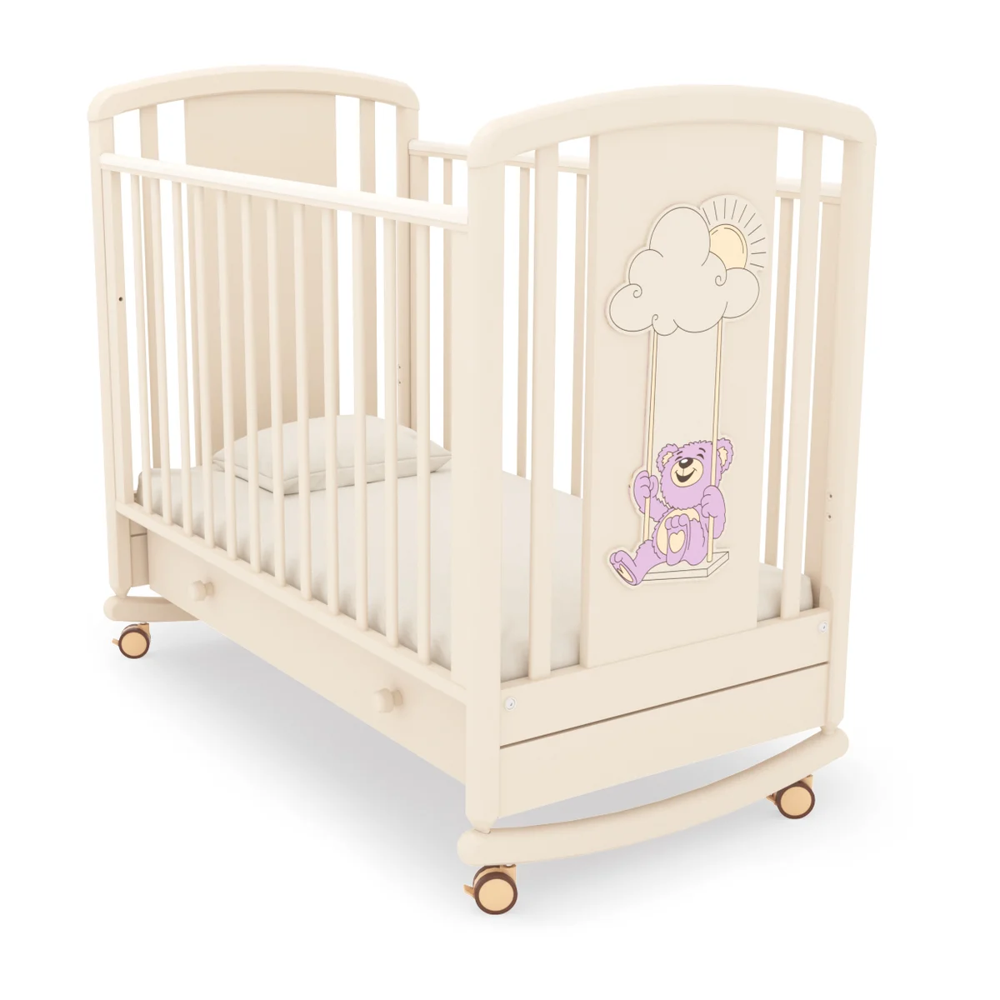
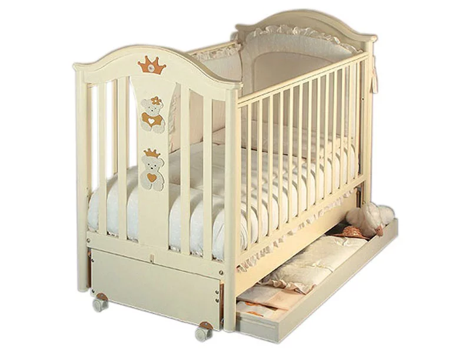

Вы получаете возможность воспользоваться всеми видами стоматологических услуг, такими как лечение зубов, протезирование зубов, имплантация зубов, вам окажут услуги по исправлению прикуса (ортодонтия) и т.д. Для комплексного лечения заболеваний специалисты
нашей мастерской применяют самые современные медикаменты, ультразвук, физиотерапевтические процедуры. В клиниках мастерской работают профессиональные врачи-стоматологи, для которых не существует неразрешимых проблем. Они дадут
вам рекомендации и советы по уходу за зубами, профилактике болезней полости рта, избавят вас от боли, удалят зуб, поставят имплант.

Уютную атмосферу
Счастливые дети, довольнее родители, дом полная чаша, счастливая семья

Добрую улыбку
Счастливые дети, довольнее родители, дом полная чаша, счастливая семья

Счастливую семью
Счастливые дети, довольнее родители, дом полная чаша, счастливая семья

Красвую краватку
Счастливые дети, довольнее родители, дом полная чаша, счастливая семья
КАТЕГОРИИ ТОВАРОВ (УСЛУГ)
У нас вы можете воспользоваться всеми видами стоматологических услуг, такими как лечение зубов, протезирование зубов, имплантация зубов, вам окажут услуги по исправлению прикуса (ортодонтия) и т.д. Для комплексного лечения заболеваний специалисты нашей
мастерской применяют самые современные медикаменты, ультразвук, физиотерапевтические процедуры. В клиниках мастерской «Имплант Профи» работают профессиональные врачи-стоматологи, для которых не существует неразрешимых проблем.
Они дадут вам рекомендации и советы по уходу за зубами, профилактике болезней полости рта, избавят вас от боли, удалят зуб, поставят имплант.

ИЗДЕЛИЕ № 1
Остатки пищи иногда застревают между зубами, а также между десной и зубом, при некачественной гигиене полости рта остатки начинают гнить, в результате происходит размножение гнилостных бактерий.
Подробнее
ИЗДЕЛИЕ № 2
Остатки пищи иногда застревают между зубами, а также между десной и зубом, при некачественной гигиене полости рта остатки начинают гнить, в результате происходит размножение гнилостных бактерий.
Подробнее
ТАКЖЕ МЫ ПРЕДЛAГАЕМ (Наша команда)
Основными приоритетами в работе мастеров нашей команды являются правильная оценка и выполнение заказа в предельно короткие сроки. Качественное протезирование зубов за один день и срочная имплантация зубов по оптимальной цене – в мастерской это возможно.
Наши опытные стоматологи готовы взяться за решение задач любой сложности, будь то имплантация зубов и наращивание кости, ортодонтия или протезирование после имплантации.
Омар Хайям
Самый лучший мастер
Основными приоритетами в работе мастеров нашей мастерской являются правильная оценка и выполнение заказа в предельно короткие сроки.
Оформить заказ
Омар Хайям
Самый лучший мастер
Основными приоритетами в работе мастеров нашей мастерской являются правильная оценка и выполнение заказа в предельно короткие сроки.
Оформить заказ
Омар Хайям
Самый лучший мастер
Основными приоритетами в работе мастеров нашей мастерской являются правильная оценка и выполнение заказа в предельно короткие сроки.
Оформить заказ
Омар Хайям
Самый лучший мастер
Основными приоритетами в работе мастеров нашей мастерской являются правильная оценка и выполнение заказа в предельно короткие сроки.
Оформить заказ


 48
48
 4
4


Эстетическая стоматология - художественная реставрация зубов
2 часа и зубки как новенькие!!! Реставрация, ты чудо! Расскажу о своем опыте реставрации передних зубов + фото «До-После»